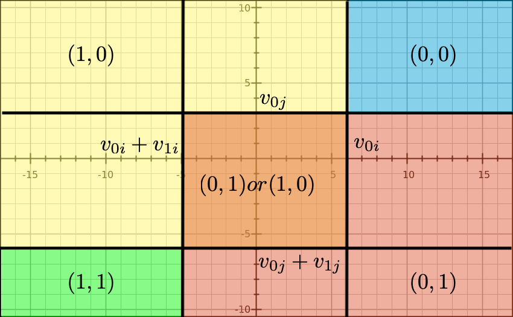

Chapter 6 Entry and Exit
6.1 Motivations
- By studying the entry decisions of firms, we can identify the profit function including the entry cost of firms.
- A profit function is the reduced-form parameter of the underlying demand function, cost function, and conduct parameters.
- The profit function can be identified without assuming a particular conduct.
- The parameter is informative enough to answer questions regarding the market structure and producer surplus.
- In the last chapter, we discussed the identification of conduct, in which we learned that the exogenous change in the number of firms in a market gives some information about the conduct.
- In the entry/exit analysis, we study the relationship between the market size, which exogenously changes the equilibrium number of firms, and the change in the market structure to infer the conduct.
- Entry and exit is not all about firms.
- The decision of launching a product is a sort of entry decision and the decision of abolishing a product is a sort of exit decision.
- The framework in this chapter can be applied to a wider class of problems.
- This chapter is mostly based on Berry & Tamer (2006).
6.1.1 Entry Cost, Mode of Competition, and Market Structure
- Fixed and sunk entry costs and mode of competition are key determinants for market structure (Sutton, 2007).
Figure 6.1: Figure 1 of Sutton (2007)
- The tougher the mode of competition, the less firms can earn enough profit to compensate the entry cost.
- Therefore, the tougher the mode of competition, the number of firms in the market in the equilibrium cannot grow when the market size increases.
6.1.2 Exogenous and Endogenous Entry Cost
- Exogenous fixed and sunk entry cost:
- The cost of entry is the same across modes of entry.
- Endogenous fixed and sunk entry cost:
- The cost differs across modes of entry.
- For example, firms decide the quality of the product upon entering the market and the the cost of entry is increasing in the quality choice.
- If endogenous fixed and sunk entry cost is relevant, the entry cost to compete with the incumbent and have a positive profit will increase as the the number of incumbent firms increases.
- Therefore, the equilibrium firm number will be small and firm size will be large when endogenous fixed and sunk entry cost is relevant.
6.2 Monopoly Entry
6.2.1 Variable Profits and Fixed Costs
- Consider a cross-section of markets, with one potential entrant in each market.
- Profits in market \(i\) are given by: \[ \pi(x_i, F_i) \equiv v(x_i) - F_i. \]
- \(v(x)\) is deterministic and \(F\) is random.
- Typically, \(v(x)\) is interpreted as the variable profits and \(F\) as the fixed costs.
The potential entrant will enter market \(i\) if and only if: \[ F_i \le v(x_i). \]
- The parameters of interest are \(v\) and the distribution of \(F\), \(\Phi\).
In general, \(F\) in a market can be correlated with \(x\).
6.2.2 Non-Identification
- Assume that \(F\) is independent of \(x\).
- Notice that a monotonic transformation of both sides of: \[ F_i \le v(x_i). \] will not change the entry probability.
- Therefore, without further restrictions, \(v\) and \(\Psi\) are at best identified only up to a monotonic transformation.
6.2.3 Restrictions for Identification.
- Keep assuming that \(F\) is independent of \(x\).
- Let \(p(x)\) is the observed entry probability at \(x\).
- \(v\) is known: Because \(v\) is the variable profit function, we can identify it directly from the demand function and cost function.
- Let \(z = v(x)\). Then \(\Psi\) is identified at \(z\) by: \[ \Psi(z) = \mathbb{P}\{F \le z\} = \mathbb{P}\{F \le v[v^{-1}(z)]\} = p[v^{- 1}(z)]. \]
- \(\Psi\) is known: Normalize the distribution of \(F\).
- Then, \(v\) is identified at \(x\) by: \[ v(x) = \Psi^{-1}[p(x)]. \]
- Impose shape restrictions on \(v\) (Matzkin, 1992):
- \(v(x)\) is homogeneous of degree 1 and there exists \(x_0\) such that \(v(x_0) = 1\). Then the functions \(v\) and \(\Psi\) are identified.
- Homogeneous of degree 1: \(v(z \cdot x) = z v(x)\).
- Let \(p(z, x_0)\) be the probability of entry at \(z\) and \(x_0\).
- Then, \(\Psi\) is identified at \(z\) by: \[ \Psi(z) = \mathbb{P}\{F \le z\} = \mathbb{P}\{F \le z v(x_0)\} = p(z, x_0). \]
- Then, \(v\) is identified by the second argument.
6.2.4 Homogeneous of Degree 1 Variable Profits
- Sufficient condition for the variable profit function to satisfy the stated condition:
- Demand is proportional to the population.
- Marginal cost is constant.
- Then, the variable profit is the market size \(z\) times the per-capita profit.
- We can normalize \(v\) at a market of size \(z = 1\) by choosing arbitrary \(x_0\).
6.3 Complete-Information Homogeneous Oligopoly Entry
6.3.1 Variable and Fixed Costs
- Timothy F. Bresnahan & Reiss (1991) pioneered the analysis of oligopoly entry models.
- We observe a cross-section of markets in which we observe the number of homogeneous firms and other market-specific characteristics.
- Let \(y_m\) be the number of firms in market \(m\).
- Let \(v_{y_m}(x_m)\) is the variable profit per firm in a market with number of firms \(y_m\) and the market characteristics \(x_m\).
- Let \(F_m\) be the market-specific fixed costs that are i.i.d. across markets with unknown distribution \(\Psi\).
- If there are \(y_m\) firms in market \(m\), the profit per firm in the market is: \[ \pi(y_m, x_m, F_m) \equiv v_{y_m}(x_m) - F_m. \]
6.3.2 Equilibrium Condition
The unique Nash equilibrium in the number of firms in market \(m\) is determined by the following equilibrium condition: \[ v_{y_m}(x_m) \ge F_m. \] \[ v_{y_m + 1}(x_m) < F_m. \]
Under this equilibrium, the probability of observing \(y\) firms in a market of type \(x\) is: \[ \mathbb{P}\{y = 0|x\} = 1 - \Psi[v_1(x)]. \] \[ \mathbb{P}\{y = 1|x\} = \Psi[v_1(x)] - \Psi[v_2(x)]. \] \[ \mathbb{P}\{y = 2|x\} = \Psi[v_2(x)] - \Psi[v_3(x)]. \] \[ \cdots \]
In other words, the probability of observing at least \(y\) firms in a market of type \(x\) is: \[ \mathbb{P}\{y \ge 1|x\} = \Psi[v_1(x)]. \] \[ \mathbb{P}\{y \ge 2|x\} = \Psi[v_2(x)]. \] \[ \mathbb{P}\{y \ge 3|x\} = \Psi[v_3(x)]. \] \[ \cdots \]
6.3.3 Identification under a Shape Restriction
- The identification argument for each \(y\) is the same as the monopoly entry case.
- For example, assume \(v_y(x) = z v_y(\tilde{x})\) and \(v_1(\tilde{x}_0) = 1\).
- Let \(P_y(z, \tilde{x})\) be the observed probability that the number of firms is no less than \(y\) in market of type \(z, \tilde{x}\).
- Then \(\Psi\) is identified at \(z\) by: \[ \Psi(z) = \mathbb{P}\{F \le z\} = \mathbb{P}\{F \le z v_1(\tilde{x}_0)\} = P_1(z, \tilde{x}_0). \]
- Then, the identification of \(v_y\) follows from: \[ v_y(\tilde{x}) = \frac{\Psi^{-1}[P_y(z, \tilde{x})]}{z}. \]
6.3.4 Log Likelihood Function
- The log likelihood of observing \(\{y_m\}_{m = 1}^M\) given \(\{x_m\}_{m = 1}^M\) is: \[ l(v, \Psi|\{y_m\}_{m = 1}^M, \{x_m\}_{m = 1}^M) = \sum_{m = 1}^M \log\{\Psi[v_{y_m}(x_m)] - \Psi[v_{y_m + 1}(x_m)]\}. \]
- This is a ordered model in \(y_m\).
- If \(\Psi\) is a normal distribution, it is called an ordered probit model.
6.4 Complete-Information Heterogeneous Oligopoly Entry
6.4.1 Bivartiate Game with Heterogeneous Profits
- We observe a cross-section of markets in which there are two potential entrants.
- Let the profit of firm \(i\) in market \(m\) be: \[ \begin{split} \pi_{im}(x_{im}, y_{jm}, f_{im}) & \equiv v(y_{jm}, x_{im}) - f_{im}\\ &=v_{0i}(x_{im}) + y_{jm} v_{1i}(x_{im}) - f_{im}. \end{split} \]
- \(y_{im}\) and \(y_{jm}\) are the indicators of entry of firm \(i\) and \(j\) in market \(m\).
- \(x_{im}\) and \(x_{jm}\) are firm \(i\) and \(j\)’s characteristics in market \(m\).
- \(f_{im}\) and \(f_{jm}\) are the fixed costs of firm \(i\) and \(j\) in market \(m\).
- The second equation is without loss of generality because \(y_{jm}\) is a binary variable.
- The competitive effect of firm \(j\) on \(i\) and the effect o firm \(i\) on \(j\) are asymmetric.
- The parameters of interest are \(v_{0i}, v_{0j}, v_{1i}, v_{1j}\) and the joint distribution of \(f_{im}, f_{jm}\) conditional on \(x_{im}\) and \(x_{jm}\).
- Firms observe both \(f_{im}, f_{jm}\) when they make decisions, but econometrician does not.
6.4.2 Sampling Assumption and Observations
- We have a random sample of observations on markets where every observation is an observable realization of an equilibrium game played between firm \(i\) and \(j\).
- Thus, we can observe:
- \(\mathbb{P}\{0, 0|x\}\): the probability that a market of type \(x\) has no firm.
- \(\mathbb{P}\{1, 0|x\}\): the probability that a market of type \(x\) has firm \(i\) but not firm \(j\).
- \(\mathbb{P}\{0, 1|x\}\): the probability that a market of type \(x\) has firm \(j\) but not firm \(i\).
- \(\mathbb{P}\{1, 1|x\}\): the probability that a market of type \(x\) has both firms.
6.4.3 Identification Assuming Pure-Strategy Equilibrium
- Tamer (2003) considers the identification when there are only two potential entrants and the pure-strategy Nash equilibrium is assumed.
- Assume that the data is from a pure-strategy equilibrium.
Then, the probabilities \(\mathbb{P}\{0, 0|x\}\) and \(\mathbb{P}\{1, 1|x\}\) are written as: \[ \mathbb{P}\{0, 0|x\} = \mathbb{P}\{f_{im} \ge v_{0i}(x_{im}), f_{jm} \ge v_{0j}(x_{jm})|x_{im}, x_{jm}\}. \] \[ \mathbb{P}\{1, 1|x\} = \mathbb{P}\{f_{im} \le v_{0i}(x_{im}) + v_{1i}(x_{im}), f_{jm} \le v_{0j}(x_{jm}) + v_{1j}(x_{jm})|x_{im}, x_{jm}\}. \]
- Assume that \((f_{im}, f_{jm})\) are distributed independently of \((x_{im}, x_{jm})\) with a joint distribution \(F\).
- Assume that \(v_{0i}(x_{im}) = z_{im} v_0(\tilde{x}_{im})\) and \(v_{0j}(x_{jm}) = z_{jm} v_0(\tilde{x}_{jm})\).
- Assume that \(v_{0i}(\tilde{x}_0) = v_{0j}(\tilde{x}_0) = 1\).
- Assume that \(v_{1i}\) and \(v_{1j}\) are non-positive.
- Assume that \(z_{im}| z_{jm}, \tilde{x}_{im}, \tilde{x}_{jm}\) has a distribution with support on \(\mathbb{R}\) and similar for \(z_{jm}\).
- Then, \(F\) is identified by: \[ \begin{split} \mathbb{P}\{f_{im} \ge z_{im}, f_{jm} \ge z_{jm}\} &= \mathbb{P}\{ f_{im} \ge z_{im} v_0(\tilde{x}_{0}), f_{jm} \ge z_{jm} v_0(\tilde{x}_{0})\}\\ &= \mathbb{P}\{0, 0|z_{im}, \tilde{x}_0, z_{jm}, \tilde{x}_0\}. \end{split} \]
- Then, push \(z_{jm} \to - \infty\) to get: \[ \begin{split} \mathbb{P}\{f_{im} \ge z_{im} v_0(\tilde{x}_{im})\} &= \lim_{z_{jm} \to - \infty} \mathbb{P}\{f_{im} \ge z_{im} v_0(x_{im}), f_{jm} \ge z_{jm} v_0(x_{jm})\}\\ &= \lim_{z_{jm} \to - \infty} \mathbb{P}\{0, 0|z_{im}, \tilde{x}_{im}, z_{jm}, \tilde{x}_{jm}\} \end{split} \]
- Hence, \(v_{0}\) is identified by: \[ v_0(\tilde{x}_{im}) = \frac{F^{-1}[\lim_{z_{jm} \to - \infty} \mathbb{P}\{0, 0|z_{im}, \tilde{x}_{im}, z_{jm}, \tilde{x}_{jm}\}]}{z_{im}}. \]
The identification of \(v_{1i}\) and \(v_{1j}\) are similar.
6.4.4 Heterogeneous Independent Fixed Costs
- S. T. Berry (1992) considers several extensions to the homogeneous oligopoly models.
- Assume that the fixed costs are heterogeneous and independent across firms.
- c.f. In homogeneous oligopoly model, the fixed costs were perfectly correlated across firms in a market.
- Assume that the characteristics can be firm-specific (that can include market-specific characteristics).
- Assume that the variable profit function is homogeneous: \[ \pi_{y}(x_m, F_{im}) = v_y(x_{im}) - F_{im}. \]
- Assume that \(F\) is independent of \(x\).
- Suppose that we observe the number of potential entrants in each market.
- For example, in the airline industry, market is a city pair.
- The potential entrants into an airline city pair were those with some service out of at least one of the endpoints of the city pair.
- The variation in the number of potential entrants can be used to identify the model.
- Define: \[ \mu(x) = \mathbb{P}\{F_{im} < v_1(x)\}. \] \[ \delta(x) = \mathbb{P}\{F_{im} < v_2(x)\}. \]
- Suppose that we know that there only two potential entrants into a market.
- Among such markets, we have: \[ \mathbb{P}\{0, 0|x_1, x_2\} = [1 - \mu(x_1)] [1 - \mu(x_2)]. \] \[ \mathbb{P}\{1, 1|x_1, x_2\} = \delta(x_1) \delta(x_2). \]
- If we set \(x_1 = x_2 = x\), then we have: \[ \mathbb{P}\{0, 0|x, x\} = [1 - \mu(x)]^2. \] \[ \mathbb{P}\{1, 1|x, x\} = \delta(x)^2. \]
- They identify \(\mu\) and \(\delta\) at \(x\).
- Under shape restrictions, we can identify \(v\) and \(\Psi\) as well.
6.4.6 Inference Based On a Unique Prediction
- S. T. Berry (1992) develops a more general model built on the ideas above.
- The key for his analysis is that he ensures that there is a unique number of equilibrium entrants.
- This enables him to calculate the likelihood of observing a sequence of number of entrants, but at the cost of the generality of the underlying model.
6.4.7 Entry in the Airline Industry: One-shot Game
- Based on S. T. Berry (1992).
- A market = a city pair market at a single point in time.
- Consider a one-shot entry game that yields a network structure.
- At the beginning of the period, each firm takes its overall network structure as given and decides whether to operate in a given city pair independently across markets.
6.4.8 Entry in the Airline Industry: Profit Function
- There are \(K_m\) potential entrants in market \(m\).
- Let \(y_m\) be a strategy profile.
- \(y_m = (y_{1m}, \cdots, y_{K_m m})'\), \(y_{im} \in \{0, 1\}\).
- The profit function for firm \(i\) in market \(m\): \[\begin{equation} \pi_{im}(y_m, f_{im}) = v_m\left(N_{m}\right) - f_{im}. \end{equation}\]
- \(N_{m} = \sum_{i = 1}^{K_m} y_{im}\).
- \(v_m\) is strictly decreasing in \(N_m\).
6.4.9 Entry in the Airline Industry: Profit Function
- The common term is assumed to be: \[ v_m(N) = x_m' \beta + h(\delta, N_m) + \rho u_{m}, \]
- \(x_m\) is the observed market characteristics, \(h(\cdot)\) is a function that is decreasing in \(N_m\), say, \(- \delta \ln (N_m)\).
- \(u_m\) is the market characteristics that is observed by firms but not by econometrician.
- The firm-specific term: \[ f_{im} = z_{im}' \alpha + \sigma u_{im}, \]
- \(z_{im}\) is the observed firm characteristics.
- A scale normalization: \(\sigma = \sqrt{1 - \rho^2}\) \(\Rightarrow var(\rho u_m + \sigma u_{im}) = 1\).
6.4.10 Entry in the Airline Industry: Likelihood Function
- The observed part: \[ r_{im}(N) = x_m' \beta - \delta \ln (N_m) + z_{im}' \alpha. \]
- The unobserved part: \[ \epsilon_{im} = \sqrt{1 - \rho^2} u_{im} + \rho u_{m}. \]
6.4.11 Is the Equilibrium Number of Firms Unique?
- Either of the following conditions are sufficient:
- No firm-level unobserved heterogeneity: \(\rho = 1\).
- No market-level unobserved heterogeneity: \(\rho = 0\).
- The order of entry is predetermined, for example, the most profitable firms enter first.
- The incumbent firms enter first.
- Under either of the above assumptions, simulate the equilibrium number of firms in each market and match with the data.
6.5 Multiple Prediction
- If we further generalize the model, we will suffer from the problem of multiple prediction.
- First, even in S. T. Berry (1992)’s framework, the identity of entrants were not uniquely predicted.
- Second, if we allows for the asymmetric competitive effects, we will not have the unique number of equilibrium entrants.
- Third, the uniqueness of the equilibria may not hold once we allow for the mixed-strategy Nash equilibria.
- If we do not have the unique prediction on the endogenous variables, we cannot write down the likelihood function.
6.5.1 Multiple Equilibria in Bivariate Game with Heterogenous Profits
- Return to Tamer (2003)’s bivariate game with heterogeneous profits.
- Consider the pure-strategy Nash equilibrium when \(f_{im}, f_{jm}\) are realized.
- \((0, 0)\) is a pure-strategy Nash equilibrium if: \[ f_{im} \ge v_{0i}(x_{im}); \] \[ f_{jm} \ge v_{0j}(x_{jm}). \]
- \((1, 1)\) is a pure-strategy Nash equilibrium if: \[ f_{im} \le v_{0i}(x_{im}) + v_{1i}(x_{im}); \] \[ f_{jm} \le v_{0j}(x_{jm}) + v_{1j}(x_{jm}). \]
- \((0, 1)\) is a pure-strategy Nash equilibrium if: \[ f_{im} \ge v_{0i}(x_{im}) + v_{1i}(x_{im}); \] \[ f_{jm} \le v_{0j}(x_{jm}). \]
- \((1, 0)\) is a pure-strategy Nash equilibrium if: \[ f_{im} \le v_{0i}(x_{im}); \] \[ f_{jm} \ge v_{0j}(x_{jm}) + v_{1j}(x_{jm}). \]
- In a certain region of \(f_{im}, f_{jm}\), there are multiple equilibria.
6.5.2 Multiple Prediction in Bivariate Game with Heterogenous Profits
- In the orange region, we have multiple pure-strategy equilibria.
- If we allow for mixed-strategy equilibria, the region of \(f_{im}, f_{jm}\) on which there are multiple equilibria will increase. 
- In this example, we can write the likelihood of the number of equilibrium entrants:
- \(2\): green area.
- \(1\): yellow, orange, and red areas.
- \(0\): blue area.
- However, we cannot write the likelihood of the strategy profile.
- \((1, 1)\): green area.
- \((0, 1)\): \(\ge\) red area, \(\le\) orange and red area.
- \((1, 0)\): \(\ge\) yellow area, \(\le\) orange and yellow area.
- \((0, 0)\): blue area.
6.5.3 Inference Based on Moment Inequalities
- According to the theory, we have: \[ \mathbb{P}\{0, 0|x\} = \mathbb{P}\{f_{i} \ge v_{0i}(x_{i}), f_{j} \ge v_{0j}(x_{j})\} \equiv H(0, 0|x). \]
\[ \mathbb{P}\{1, 1|x\} = \mathbb{P}\{f_{i} \le v_{0i}(x_{i}) + v_{1i}(x_{i}), f_{j} \le v_{0j}(x_{j}) + v_{1j}(x_{j}) \} \equiv H(1, 1|x). \]
\[ \mathbb{P}\{0, 1|x\} \ge \mathbb{P}\{f_{i} \ge v_{0i}, f_{j} \le v_{0j}\} + \mathbb{P}\{f_{i} \ge v_{0i} + v_{1i}, f_{j} \le v_{0j} + v_{1j}\} \equiv \underline{H}(0, 1|x). \]
\[ \mathbb{P}\{0, 1|x\} \le \underline{H}(0, 1|x) + \mathbb{P}\{v_{0i} + v_{1i} \le f_{i} \le v_{0i}, v_{0j} + v_{1j} \le f_{j} \le f_{0j}\} \equiv \overline{H}(0, 1|x). \]
\[ \mathbb{P}\{1, 0|x\} \ge \mathbb{P}\{f_{j} \ge v_{0j}, f_{i} \le v_{0i}\} + \mathbb{P}\{f_{j} \ge v_{0j} + v_{1j}, f_{i} \le v_{0i} + v_{1i}\} \equiv \underline{H}(1, 0|x). \]
\[ \mathbb{P}\{1, 0|x\} \le \underline{H}(0, 1|x) + \mathbb{P}\{v_{0} + v_{1i} \le f_{i} \le v_{0i}, v_{0j} + v_{1j} \le f_{j} \le f_{0j}\} \equiv \overline{H}(1, 0|x). \]
- The parameters should satisfy the moment conditions: \[ \mathbb{P}\{0, 0|x\} - H(0, 0|x) = 0; \] \[ \mathbb{P}\{1, 1|x\} - H(1, 1|x) = 0; \] \[ \min\left\{\mathbb{P}\{0, 1|x\} - \underline{H}(0, 1|x), 0\right\} = 0; \] \[ \max\left\{\mathbb{P}\{0, 1|x\} - \overline{H}(0, 1|x), 0\right\} = 0; \] \[ \min\left\{\mathbb{P}\{1, 0|x\} - \underline{H}(1, 0|x), 0\right\} = 0; \] \[ \max\left\{\mathbb{P}\{1, 0|x\} - \overline{H}(1, 0|x), 0\right\} = 0; \]
- We can estimate the parameters with the GMM method using the above modified moment conditions.
- Inference based on the moment inequalities are found in D. W. K. Andrews & Soares (2010).
- Ciliberto & Tamer (2009) study the entry exit of airlines when there are heterogeneous competitive effects using the above approach.
6.6 Incompelete-Information Heterogenous Oligopoly Entry
6.6.1 Bivariate Case
- There are two potential entrants.
- Let the profit of firm \(i\) in market \(m\) be: \[ \begin{split} \pi_{im}(x_{im}, y_{jm}, f_{im}) & \equiv v(y_{jm}, x_{im}) - f_{im}\\ &=v_{0i}(x_{im}) + y_{jm} v_{1i}(x_{im}) - f_{im}. \end{split} \]
- \(y_{im}\) and \(y_{jm}\) are the indicators of entry of firm \(i\) and \(j\) in market \(m\).
- \(x_{im}\) and \(x_{jm}\) are firm \(i\) and \(j\)’s characteristics in market \(m\).
- \(f_{im}\) and \(f_{jm}\) are the fixed costs of firm \(i\) and \(j\) in market \(m\).
- The second equation is without loss of generality because \(y_{jm}\) is a binary variable.
- The competitive effect of firm \(j\) on \(i\) and the effect o firm \(i\) on \(j\) are asymmetric.
- The parameters of interest are \(v_{0i}, v_{0j}, v_{1i}, v_{1j}\) and the joint distribution of \(f_{im}, f_{jm}\) conditional on \(x_{im}\) and \(x_{jm}\).
- Firm \(i\) observe both \(f_{im}\) but not \(f_{jm}\) when it makes decision.
- Firm \(j\) observe both \(f_{jm}\) but not \(f_{im}\) when it makes decision.
- Econometrican does not observe either of them.
- The joint distribution of \(f_{im}, f_{jm}\) is \(F\) (independent of \(x\)).
6.6.2 The Equilibrium Strategy and Belief
- The equilibrium strategy becomes a step function that decreases in a threshold: \[ y_{im} = 1\{f_{im} \le t_{im}\}. \] \[ y_{jm} = 1\{f_{jm} \le t_{jm}\}. \]
- Suppose that firm \(i\) believes that \(f_{jm}\) has a distribution of \(G_{jm}^{im}\) and firm \(j\) believes that \(f_{im}\) has a distribution of \(G_{im}^{jm}\).
- Usually, we assume a common and objective prior: \(G_{jm}^{im}(\epsilon_{jm}) = F(\epsilon_{jm}|\epsilon_{im})\) and \(G_{im}^{jm}(\epsilon_{im}) = F(\epsilon_{im}|\epsilon_{jm})\).
- When firm \(j\) follows strategy \(t_{jm}\), the expected payoff for firm \(i\) to enter is: \[ [v_{0i}(x_{im}) - f_{im}][1 - G_{jm}^{im}(t_{jm})] + [v_{0i}(x_{im}) + v_{1i}(x_{im} - f_{im})] G_{jm}^{im}(t_{jm}). \]
- Thus, the threshold \(t_{im}\) is determined by: \[ [v_{0i}(x_{im}) - t_{im}][1 - G_{jm}^{im}(t_{jm})] + [v_{0i}(x_{im}) + v_{1i}(x_{im} - t_{im})] G_{jm}^{im}(t_{jm}) = 0. \]
- In the same way, the threshold \(t_{jm}\) is determined by: \[ [v_{0j}(x_{jm}) - t_{jm}][1 - G_{im}^{jm}(t_{im})] + [v_{0j}(x_{jm}) + v_{1j}(x_{jm} - t_{jm})] G_{im}^{jm}(t_{im}) = 0. \]
- This system of equations can have multiple solution.
6.6.3 Equilibrium Selection and Likelihood
- If we specify the equilibrium selection rule \(\mathbb{P}(t_{im}, t_{jm}|x_{im}, x_{jm}, f_{im}, f_{jm})\), then we can specify the likelihood of observing \((0, 0)\), \((0, 1)\), \((1, 0)\), and \((1, 1)\).
- If we do not, we will only have bounds on the likelihood of observing \((0, 0)\), \((0, 1)\), \((1, 0)\), and \((1, 1)\).
- Another way is to assume that the same equilibrium \(t_{im}^*(x_{im}, x_{jm}), t_{jm}^*(x_{im}, x_{jm})\) holds across markets.
- Then, the across market relative frequency of entries conditional on \(x_{im}, x_{jm}\) gives the estimates of the entry probabilities: \[ \widehat{G}_{im}(x_{im}, x_{jm}) \approx G_{im}^{jm}[t^*_{im}(x_{im}, x_{jm})], \] \[ \widehat{G}_{jm}(x_{im}, x_{jm}) \approx G_{jm}^{im}[t_{jm}^*(x_{im}, x_{jm})], \] for each \(x_{im}, x_{jm}\).
- The estimated distribution has to solve: \[ \widehat{G}_{im}(x_{im}, x_{jm}) = \mathbb{P}\{[v_{0i}(x_{im}) - f_{im}][1 - \widehat{G}_{jm}(x_{im}, x_{jm})] + [v_{0i}(x_{im}) + v_{1i}(x_{im}) - f_{im}] \widehat{G}_{jm}(x_{im}, x_{jm}) > 0\}. \] \[ \widehat{G}_{jm}(x_{im}, x_{jm}) = \mathbb{P}\{[v_{0j}(x_{jm}) - f_{jm}][1 - \widehat{G}_{im}(x_{im}, x_{jm})] + [v_{0j}(x_{jm}) + v_{1j}(x_{jm}) - f_{jm}] \widehat{G}_{im}(x_{im}, x_{jm}) > 0\}. \]
- We find parameters \(v_{0i}, v_{0j}, v_{1i}, v_{1j}, F\) that solve this system of equations.
- The “same equilibrium” assumption is hardly justified, but is often used in the empirical studies.
References
Berry, S., & Tamer, E. (2006). Identification in Models of Oligopoly Entry.
Sutton, J. (2007). Chapter 35 Market Structure: Theory and Evidence. In M. Armstrong & R. Porter (Eds.), Handbook of Industrial Organization (Vol. 3, pp. 2301–2368). Elsevier.
Matzkin, R. L. (1992). Nonparametric and Distribution-Free Estimation of the Binary Threshold Crossing and The Binary Choice Models. Econometrica, 60(2), 239–270.
Bresnahan, T. F., & Reiss, P. C. (1991). Entry and competition in concentrated markets. Journal of Political Economy, 99(5), 977.
Tamer, E. (2003). Incomplete Simultaneous Discrete Response Model with Multiple Equilibria. Review of Economic Studies, 70(1), 147–165.
Berry, S. T. (1992). Estimation of a Model of Entry in the Airline Industry. Econometrica, 60(4), 889–917.
Andrews, D. W. K., & Soares, G. (2010). Inference for Parameters Defined by Moment Inequalities Using Generalized Moment Selection. Econometrica, 78(1), 119–157.
Ciliberto, F., & Tamer, E. (2009). Market Structure and Multiple Equilibria in Airline Markets. Econometrica, 77(6), 1791–1828.